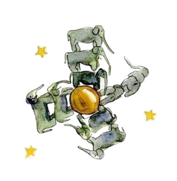
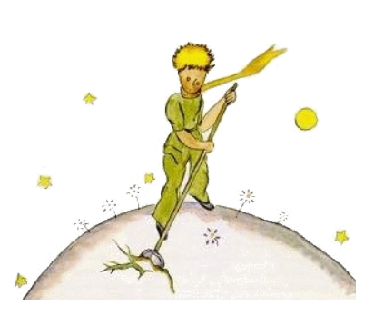
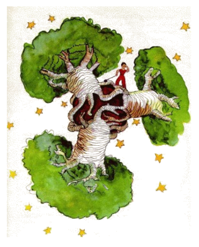

5
Chascun die yo aprendet alquó nov pri li planete, pri li departe e pri li viage. To evenit tre lentmen in li curse de mi reflectiones. Talmen yo aprendet in li triesim die li tragedie del baobab-árbor. Anc to yo finalmen debi al agne, nam subitmen li litt prince questionat me quam il vell esser vexat de grav dúbites:
"Ma esque it es just que agnes manja arbustes?"
"Yes, to es just."
"Ay, tande yo es felici!"
Yo ne comprendet pro quo it es esset tant important que agnes manja arbustes. Ma li litt prince adjuntet:
"Tande ili anc manja baobab-árbores?"
Yo explicat al litt prince detalliatmen que baobab-árbores ne es arbustes, ma árbores queles es tam alt quam un cloch-turre. E mem in ti casu que il vell prender con se un tot greg de elefantes, ti greg ne vell posser luctar contra un sol baobab-árbor.
Li idé con li elefantes fa rider le.
"On vell dever les staplar ..."

Ma tande il remarcat inteligentmen:
"Ante li baobab-árbores deveni grand, ili comensat in prim litt."
"To es corect. Ma pro quo tu vole que tui agnes manja li litt baobab-árbores?"
Il respondet: "It es ja bon! Noi va vider!" Sam quam it acte se pri li max clar cose del munde. Yo devet usar tot mi intelectu por comprender ti cose.
In facte hay sur li planete del litt prince sam quam sur omni planetes bon e mal plantes. Pro to anc hay bon granes de seme del bon plantes e mal granes de seme del mal plantes. Ma li semes es ínvisibil. Ili dormi misteriosimen in li terre til un de ili veni in mente avigilar se. Tande it extende se e in prim germina timidmen un ravissent litt gérmine, quel es tre ínofensiv. Si it acte se pri li gérmine de radís o de un rose on posse far crescer it qualmen it vole. Ma si it acte se pri un nociv plante on deve tirar it ex li terre tam bentost quam on reconosse que it es un tal plante. Sur li planete del litt prince existet terribil semes ... e to esset li semes del baobab-árbores. Li suol del planete esset plen de ili. Ma on ne posse plu desembarassar se de un baobob-árbor si on comensa intervenir tro tardmen contra ili. Il apropria se del tot planete. Il penetra it con su radicas. E si li planete es tro litt e li baobab-árbores deveni tro numerosi, ili fa exploder li planete.
"It es un question del discipline", dit a me plu tard li litt prince. "Si on ha finit su matin-toilette, on deve cuidosimen far li matin-toilette del planete. On deve fortiar se regularimen tirar li gérmines del baobab-árbor ex li terre tam bentost quam on posse les distinter del rosieros a queles ili es tre simil in lor yunesse. To es advere un enoyant, ma facil labor."

E un die il consiliat me, que yo deve efortiar me que yo successa far un bell dessine que li infantes che me in hem amemora it corectmen. "Si un die ili comensa viagear", il dit, "ili posse profitar de it." Quelcvez it ne fa nequó si on ajorna un labor a plu tard. Ma si it acte se pri baobab-árbores, to va resultar in un catastrofe. Yo ha conosset un planete, quel es habitat de un pigri person. Il ne hat remarcat tri arbustes ..."
E talmen yo ha dessinat ti planete secun li informationes del litt prince. Yo ne parla con plesura quam un moralist. Ma li dangerositá del baobab-árbores es tant poc conosset e li dangeres, queles menacia chascun hom, qui perdi li via sur un asteroid, es tant imens que yo abandona ti un vez mi discretion. Yo di: infantes, atention! Li baobab-árbores! Por ganiar li atention de mi amicos por realisar li dangere, quel - ínconosset - menacia me e les ja desde long témpor, yo ha laborat mult in ti dessine. Li lecion, quel yo da per it, certmen merite li pena. Vu fórsan va questionar vos: Pro quo ti libre ne contine ancor altri, anc grandiosi dessines quam li dessine del baobab-árbores? Li response es tre simplic: Yo ha vermen provat it audacimen, ma yo ne ha successat, Quande yo dessinat li baobab-árbores yo esset inspirat del sentiment del urgentie.
